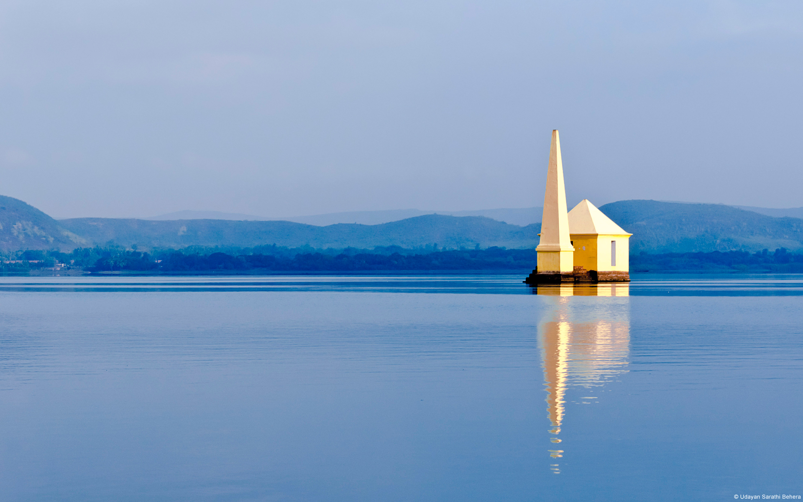
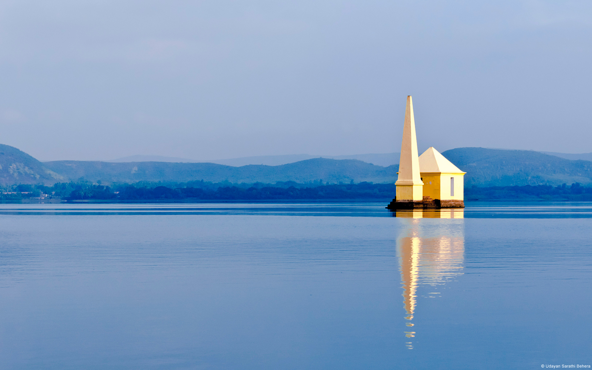

All you need to know about India!
"India is the cradle of human race, the birthplace of human speech, the mother of history, the grandmother of legend, and the great grandmother of tradition. Our most valuable and most astrictive materials in the history of man are treasured up in India only!" [ Mark Twain ]
India rested it's dependence from Britain in 1947, after a long struggle led by Indian National Congress, and especially the father of India, Mahatma Ghandi. India's acquisition of independence resulted in two countries, India and Pakistan. This period saw one of the largest mass migrations ever recorded in modern history.
India is home to more than 1.2 billion people today, with a total of 12 million Hindus, Sikhs, and Muslims moving between the newly created nations of India and Pakistan. It has many amazing site seeing places around the country with mind-blowing history behind all of them.
Some famous site seeing places I enjoy viewing is the Taj Mahal, which I will explain the history of the Taj Mahal later on this page. In the North there is Ajmer, Agra, and Jaipur. In the West there is Goa, Ahmedabad, and Surat. In the East there is Kolkata, Chandipur, and Chilika Lake. In the South there is Mumbai, Hydrabad, and Chennai.
Below is a picture of Taj Mahal on the far left. Taj Mahal is an ivory-white marble mosque in Agra. It was made in 1632 by the Mughal emperor, Shah Jahan. He made in remembrance of his late wife Mumtaz Mahal.
Below please find some amazing vacation spots that are in India!

 
